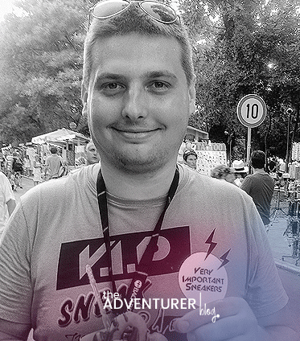

Blog o miejscach, które odwiedziłem, i tych, do których dopiero się wybieram.
O mnie

Cześć, jestem Krzysztof – studiuję we Warszawie, a wolny czas poświęcam na podróże i fotografię. Ten blog założyłem, żeby zapisywać wrażenia z drogi i dzielić się sprawdzonymi wskazówkami dla osób, które dopiero planują pierwsze wyjazdy.
Najchętniej podróżuję powoli i bez pośpiechu: wybieram pociągi zamiast samolotów, lokalne knajpki zamiast sieciówek, a poranne spacery po pustych uliczkach zamiast kolejek do atrakcji. Wielką miłością są dla mnie góry, dlatego często sprawdzam stan szlaków na stronie Tatrzańskiego Parku Narodowego – informacje o szlakach górskich.
Kraje, które odwiedziłem
Oto lista krajów, które udało mi się odwiedzić, wraz z tym, co zapamiętałem z każdego z nich.
Polska – najbardziej zapamiętałem wędrówki po Tatrach i zapach świeżych oscypków.
Kraków
Gdańsk
Wrocław
Hiszpania – warto zobaczyć Sagrada Família w Barcelonie i zjeść paellę nad morzem.
Włochy – zapamiętałem Koloseum o zachodzie słońca i najlepsze lody w Rzymie.
Czechy – warto przejść się Mostem Karola w Pradze wcześnie rano, zanim pojawią się tłumy.
Grecja – zapamiętałem białe domy Santorini i widok na Akropol z wzgórza Likavitos.
Plan mojej kolejnej podróży
Chcę pojechać do Portugalii, żeby zobaczyć Lizbonę, Porto i klify na wybrzeżu Algarve.
Wybrać termin wyjazdu – najlepiej dwa tygodnie na przełomie maja i czerwca.
Zarezerwować transport – lot do Lizbony i samochód na miejscu.
Znaleźć nocleg – hostel w Lizbonie i pensjonat w Lagos.
Zaplanować trasę – Lizbona, Sintra, Porto, a na koniec Algarve.
Spakować się – lekkie ubrania, buty na wędrówki i krem z filtrem.
Artykuły z podróży
Relacje z wyjazdów: co zobaczyłem, gdzie warto zjeść i na co uważać.
Koloseum w Rzymie. Fot. Livioandronico2013, Wikimedia Commons, CC BY-SA 4.0.
Do Rzymu poleciałem w piątek wieczorem i już po godzinie siedziałem w małej trattorii na Zatybrzu. Pierwsza carbonara na miejscu rozwiała wszelkie wątpliwości – wersja z polskich restauracji nawet się do niej nie umywa. Wąskie uliczki, pranie wiszące między kamienicami i zapach świeżej kawy sprawiły, że od razu poczułem się jak w filmie.
Sobotę poświęciłem na klasyczną trasę: Koloseum, Forum Romanum i Wzgórze Palatyńskie. Bilety kupiłem wcześniej przez internet, dzięki czemu ominąłem długą kolejkę. Wieczorem rzuciłem monetę do Fontanny di Trevi, a w niedzielę rano zdążyłem jeszcze zajrzeć na plac Świętego Piotra, zanim zrobiły się tłumy. Trzy dni to mało, ale wystarczą, żeby zakochać się w tym mieście.
Co warto zobaczyć?
Koloseum i Forum Romanum – najlepiej o zachodzie słońca.
Fontanna di Trevi – wczesnym rankiem, gdy jest jeszcze pusto.
Panteon – wejście jest darmowe, a kopuła robi ogromne wrażenie.
Plac Świętego Piotra i Bazylika – warto wejść na kopułę.
Dzielnica Zatybrze – spacer i kolacja w lokalnej trattorii.
Tydzień w Lizbonie
Autor: Krzysztof Chmielewski
Opublikowano:
Lizbona to miasto wzgórz, dlatego pierwszego dnia kupiłem bilet na zabytkowy tramwaj numer 28. Jazda wąskimi uliczkami Alfamy była świetnym wstępem do poznawania stolicy Portugalii. Na każdym kroku czuć tu zapach grillowanych sardynek i świeżo upieczonych pasteis de nata.
Nocny przejazd tramwajem linii 28 przez Lizbonę – przyspieszony film (29 s). Autor: laurentiun, Wikimedia Commons, CC BY 3.0.Tekstowy opis filmu
Film jest nagrany z wnętrza tramwaju linii 28 po zmroku i przyspieszony, trwa 29 sekund. Nie zawiera wypowiedzi ani muzyki, dlatego nie ma napisów, a jego treść oddaje poniższy opis.
Początek: tramwaj jedzie ulicą w mieście, nad kamienicami z oświetlonymi oknami widać granatowe niebo, na dalszym planie palą się światła uliczne.
Środek: tramwaj wjeżdża w wąską uliczkę między starymi kamienicami, oświetloną ciepłym światłem latarń, a obok przejeżdża samochód.
Dalsza część: kolejne zaułki z kolorowymi, oświetlonymi fasadami i zaparkowanymi samochodami.
Koniec: tramwaj dojeżdża do większej, otwartej przestrzeni z ozdobnymi latarniami i oświetlonym budynkiem w tle.
Kolejne dni spędziłem na spacerach po dzielnicach Belém i Bairro Alto oraz na jednodniowej wycieczce do Sintry. Wieczorami siadałem na tarasach widokowych i słuchałem fado płynącego z pobliskich knajpek. Jedna z kelnerek powiedziała mi: Lizbony nie da się zwiedzić, trzeba ją przeżyć. Tydzień minął zbyt szybko i już planuję powrót.
Najbardziej zapamiętałem wizytę w Belém, gdzie Klasztor Hieronimitów i Wieża Belém wpisano na listę Organizacji Narodów Zjednoczonych dla Wychowania, Nauki i Kultury (UNESCO). Tego dnia zapisałem w notatniku:
Siedzę nad Tagiem z pasteis de nata w ręku i patrzę na statki wypływające na Atlantyk. Rozumiem, dlaczego Portugalczycy tak tęsknią za morzem.
— Krzysztof Chmielewski, Dziennik podróży, Lizbona 2025
Co warto zobaczyć?
Klasztor Hieronimitów i Wieża Belém.
Zamek Świętego Jerzego – panorama miasta.
Pałac Pena w Sintrze.
Cukiernia w Belém – oryginalne pasteis de nata.
Długi weekend w Pradze
Autor: Krzysztof Chmielewski
Opublikowano:
Do Pragi pojechałem pociągiem z Wrocławia i już po kilku godzinach spacerowałem po Starym Mieście. Rynek z zegarem astronomicznym o pełnej godzinie przyciąga tłumy, więc wolałem wrócić tam późnym wieczorem, gdy plac był niemal pusty.
Drugiego dnia wszedłem na Hradczany i zwiedziłem Zamek Praski, a potem zjadłem tradycyjny gulasz z knedlikami w jednej z piwiarni na Malej Stranie. Na koniec wybrałem się na rejs po Wełtawie, który dał zupełnie nowe spojrzenie na miasto.
Co warto zobaczyć?
Most Karola – najlepiej o świcie.
Zamek Praski i Katedra Świętego Wita.
Rynek Staromiejski z zegarem astronomicznym.
Dzielnica Mala Strana.
Galeria
Kilka kadrów z miejsc, o których pisałem. Kliknij zdjęcie, aby otworzyć je w pełnym rozmiarze.
Most Karola, Praga, Czechy – pusty o świcie, bez tłumów turystów. Wycieczka opisana w artykule z . Fot. Valerii Tkachenko, Wikimedia Commons, CC BY 2.0.
Tramwaj linii 28 w dzielnicy Alfama, Lizbona, Portugalia – taki sam zabytkowy typ tramwaju, jakim zwiedza się miasto. Wycieczka opisana w artykule z . Fot. Paul Arps, Wikimedia Commons, CC BY 2.0.